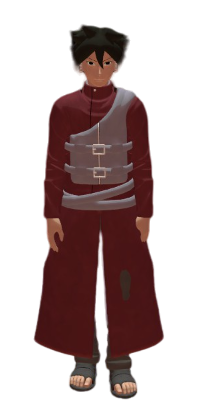
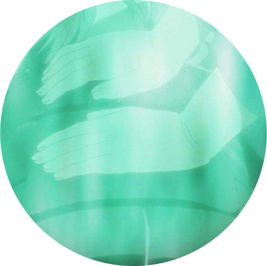

??? Uchiha - L'enfant prodige


SHARINGAN
Faisant parti du clan Uchiha, il acquerra naturellement le sharingan et souhaitera donc le développer pour révéler la vraie nature de sa pupille.
KATON
Comme nombreux d'autres Uchiha avant lui, ??? manipule le Katon avec précision. D'ailleurs, il enverra sa première boule de feu à l'âge de 6 ans en compagnie de sa mère adoptive Kori.

MEDECIN
Malgré sa forte personnalité, ??? aime tout de même "protéger" les autres ninjas, c'est pour cela qu'il se consacrera aux arts ninja de medecin afin d'aider, d'une autre façon les ninjas sur le champ de bataille.
Âge :
14 ans
Taille :
1m 60
Grade :
Genin
Centre d'intêrets :
Manger / Embêter ses "frères"
Qualités :
Loyal / Courageux / Intelligent
Défauts :
Prétentieux / Imbu de lui même /